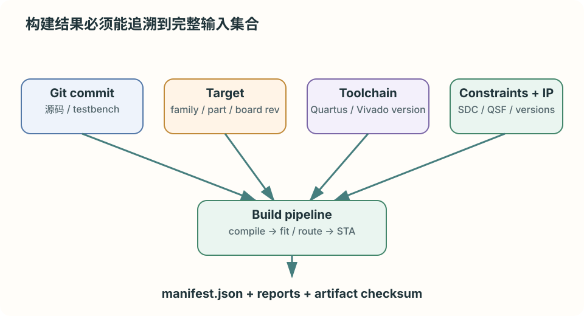
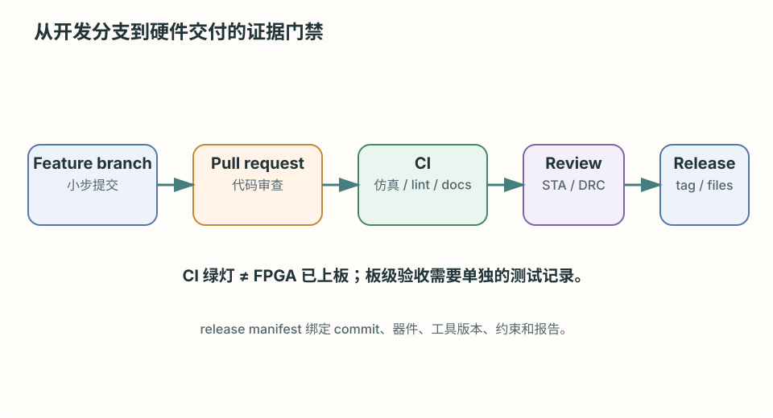

FPGA 工程组织：版本管理与可复现构建
把 RTL、约束、IP 配置、软件、工具版本和构建报告纳入可追溯的工程输入，避免把缓存和 bitstream 当作源代码。
01 / 为什么“final_final_v7”不是工程版本管理策略？
FPGA 项目除了 HDL，还包含器件型号、管脚、电压标准、时钟约束、IP 配置、仿真脚本和工具版本。只保存一个最终 RTL 文件夹，无法说明这个文件究竟对应哪块板、哪版 IP、哪套约束和哪次实现结果。
可复现工程的目标不是把所有输出文件塞进 Git，而是让团队能追溯构建输入、重建工程、复核报告，并在交付时知道某个配置文件来自哪个提交和工具版本。

工程目录不是唯一的组织方式，但边界应清晰：手写源文件和生成文件分离；板卡约束和通用逻辑分离；IP 的可配置输入与可再生 output products 分离。
02 / 先定义哪些文件是输入，哪些是产物
建议结构如下：
fpga-project/
├── src/ # RTL：Verilog / VHDL / SystemVerilog
├── sim/ # Testbench、do 文件、断言、覆盖率配置
├── constraints/ # QSF / XDC / SDC / board pin map
├── ip/ # IP 配置、版本、custom IP source
├── software/ # firmware、BSP、linker script
├── scripts/ # create / build / report / manifest
├── reports/ # 选定并审查过的签核报告
├── releases/ # 交付说明与发布元数据
├── fpga-project.yml # part、tool、IP、build 参数
└── .gitignore需要跟踪的输入：RTL、testbench、QSF/QPF、XDC/SDC、Vivado XPR、IP-XACT/组件描述、XCI/QSYS 等工程配置和 IP 参数文件（具体按工具流确认）。
通常忽略的生成物：Quartus db/、incremental_db/、output_files/，Vivado .Xil/、.runs/、.cache/，以及本地仿真临时波形、日志和缓存。不能用 *.qsf、*.sdc 或 *.xci 这类宽泛规则把真正的设计输入一起忽略。
03 / Build Manifest：把源码、器件和工具版本绑定起来

本仓库新增 scripts/build_manifest.py，对输入文件计算 SHA-256，并记录目标器件、工具版本和 Git revision：
python3 scripts/build_manifest.py \
--root . \
--output build/manifest.json \
--device "$FPGA_DEVICE" \
--tool-version "$FPGA_TOOL_VERSION" \
--revision "$(git rev-parse HEAD)"Manifest 用于回答“这份报告/产物来自哪些输入”。它不是完整的可复现构建系统：仍需固定工具安装包、许可证、IP 版本、环境变量、器件数据库、脚本和实现参数。部分 EDA 工具可能存在实现随机性或版本差异，因此“同样输入”也不应未经验证就承诺 bitstream 字节完全一致。
正确的复现验收应比较输入清单、工具版本、资源报告、时序报告和必要的硬件行为；如果业务确实要求 bit-for-bit reproducible，应单独验证该工具链和实现配置能否满足这一要求。
04 / Git 分支、代码审查与硬件版本标签

建议每个变更围绕一个明确目的：修复 RTL、调整约束、升级 IP、更新工具版本，避免把多个不相关修改揉成一个巨大提交。PR 描述至少包含：修改目的、目标器件、受影响 IP、仿真结果、约束变化、时序/资源报告以及未完成的硬件验证。
发布标签应绑定 Git commit，而不是仅写“v1.0 final”。交付包可以包含 bitstream、软件 ELF、XSA 或 Quartus 输出文件，但要同时保留 source revision、完整器件型号、工具版本、约束摘要、IP 版本和 SHA-256。
05 / 检查一个工程是否真的可复现
在一台干净机器上，按 README 从 Git clone 开始重建，不要复制旧的 db/、.runs/ 或 IP cache。然后确认：
- 是否有明确的 top、family、part、package、speed grade 与 board revision？
- 是否存在所有必要的 SDC/XDC/QSF 和管脚映射？
- IP 配置是否能重新生成，版本和依赖是否可追踪？
- 仿真是否能通过，失败时是否有 watchdog 和清晰日志？
- 报告与发布文件是否带有 Git revision 和构建清单？
为什么不能只提交 .sof 或 .bit 就称工程可复现？
配置文件只描述一次构建的结果，不包含完整的 HDL、约束、IP 配置和工具参数。它可以作为交付物，但无法代替工程源输入和构建说明。